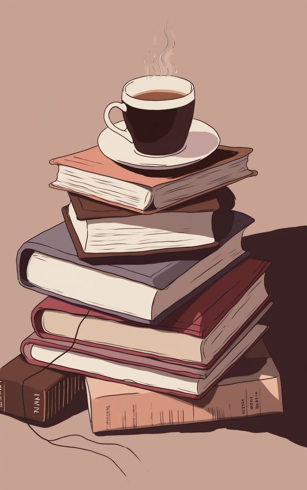
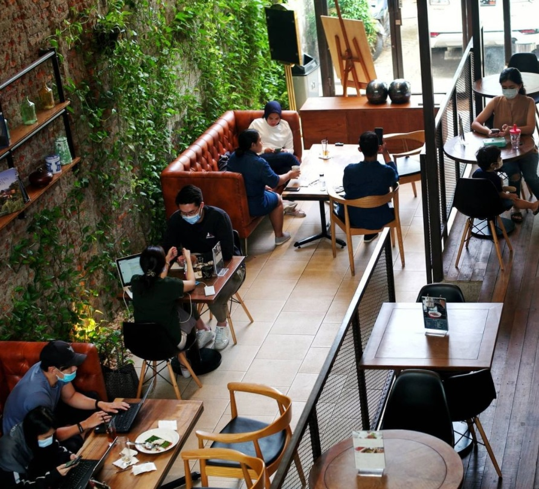
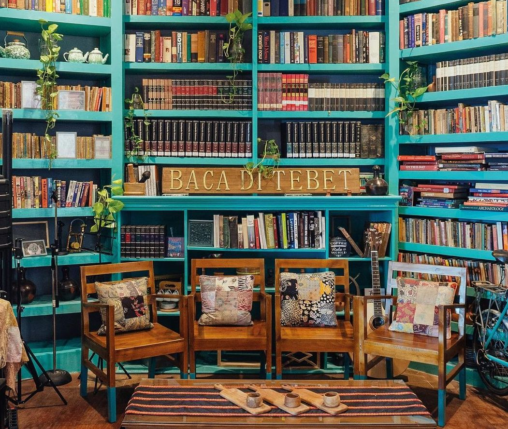
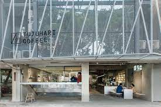

Yasmin
11210251000112
5A - Ilmu Perpustakaan

Para pencinta buku pasti suka banget kalau nemu book cafe yang nyaman dan Hidden Gem
Jakarta. Kamu nggak hanya bisa nongkrong santai sambil menyesap kopi enak, tetapi juga bisa baca berbagai macam buku sepuasnya. Apalagi, beberapa book cafe ini punya koleksi buku yang sudah susah ditemuin di perpustakaan ataupun toko buku pada umumnya.
1. Ruma Coffeatery
Ruma Coffeatery ini merupakan salah satu book cafe di Jakarta yang nyaman dan cocok banget buat kamu yang hobi baca. Apalagi, tempat ini juga tenang dan didesain dengan estetik yang bikin kamu nggak sadar waktu. Enaknya lagi, kamu juga bakal ditemanin dengan berbagai pilihan makanan dan minuman enak yang nggak boleh kamu lewatkan.
Alamat: Jl. Cipaku I No.16A, Petogogan, Kec. Kebayoran Baru, Kota Jakarta Selatan, Daerah Khusus Ibukota Jakarta

Makan di Tebet juga bakal bikin kamu yang tergila-gila dengan buku jadi bahagia banget. Cafe yang ada di lantai bawah perpustakaan Baca di Tebet tersebut juga punya banyak koleksi buku yang bisa kamu baca sambil makan. Tempatnya yang nyaman dan menu makanannya yang beragam bakal bikin kamu betah lama-lama di sini.
Alamat: Jl. Tebet Barat Dalam Raya No.29, Tebet Barat, Kec. Tebet Kota Jakarta Selatan, Daerah Khusus Ibukota Jakarta

Salah satu book cafe di Jakarta yang dijamin bikin kamu betah adalah Tujuhari Coffee. Hidden gem di Jakarta Selatan ini punya tempat yang nyaman dan estetik dengan warna putih yang mendominasinya. Kamu juga bisa nemuin banyak rak buku dengan berbagai macam koleksi yang dijamin bakal bikin kamu happy banget. Tujuhari Coffee ini juga enak buat WFH.
Alamat: Jl. Wijaya II , Grand Wijaya Center B 8-9, Pulo, Kebayoran Baru, Kota Jakarta Selatan, DKI Jakarta

Untuk selengkapnya, klik disini!